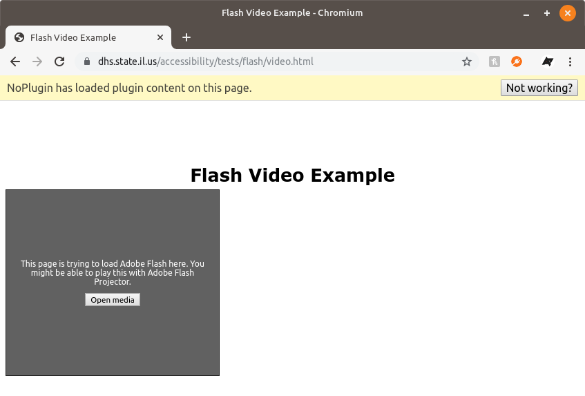

One of the browser extensions I develop is NoPlugin, which allows legacy plugin media (QuickTime, RealPlayer, etc.) to be used in modern web browsers. Sometimes the media can be played in the browser itself, and other times, NoPlugin will walk you through opening the file with a separate desktop application.
NoPlugin 6.0 is rolling out now on Chrome, Opera, and Firefox. The main new feature is that NoPlugin can now detect some Flash Player embedded objects! This functionality is still in the early stages, but it does work already with many pages.

For simple FLV container files, NoPlugin will download them for playback with VLC Media Player. For more complex SWF animations, NoPlugin will walk you through opening the URL in Adobe’s Flash Projector desktop application. Flash Projector is essentially a self-contained Flash Player, and it’s available for Mac, Windows, and Linux.
The major ‘catch’ right now is that NoPlugin can’t detect Flash objects in pages that use JavaScript to check if you have Flash installed. A ‘compatibility mode’ feature for NoPlugin is under development that will (hopefully) fix this issue, but it’s not ready yet.
Also, if you use a browser that still supports Flash (such as Firefox ESR), you don’t have to worry about NoPlugin interfering. NoPlugin checks if Flash is installed before replacing anything, and it won’t replace Flash objects if the plugin is installed and functional.
This update also improves support for Windows Media detection, and fixes a bug where some NoPlugin players would be invisible. Thanks to the people who reported those bugs via GitHub and email!